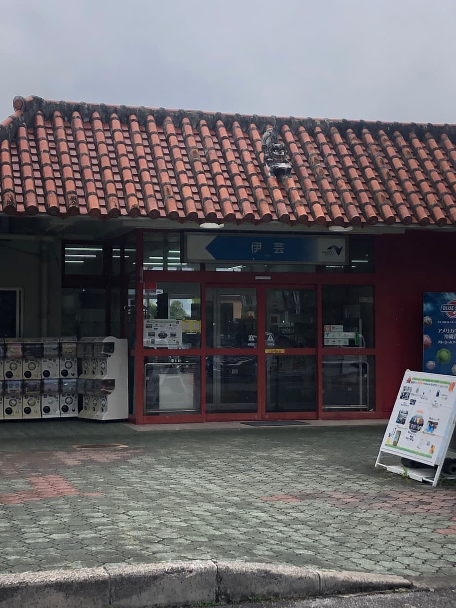
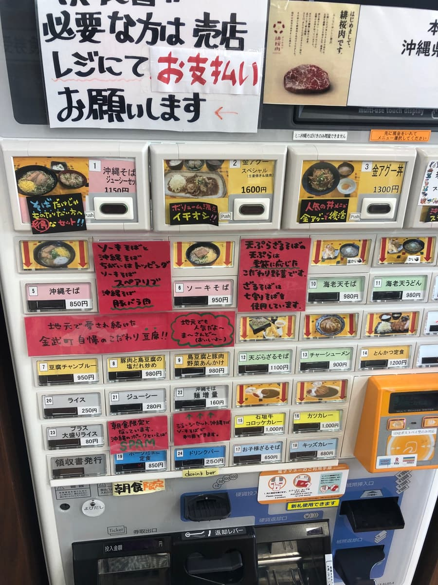
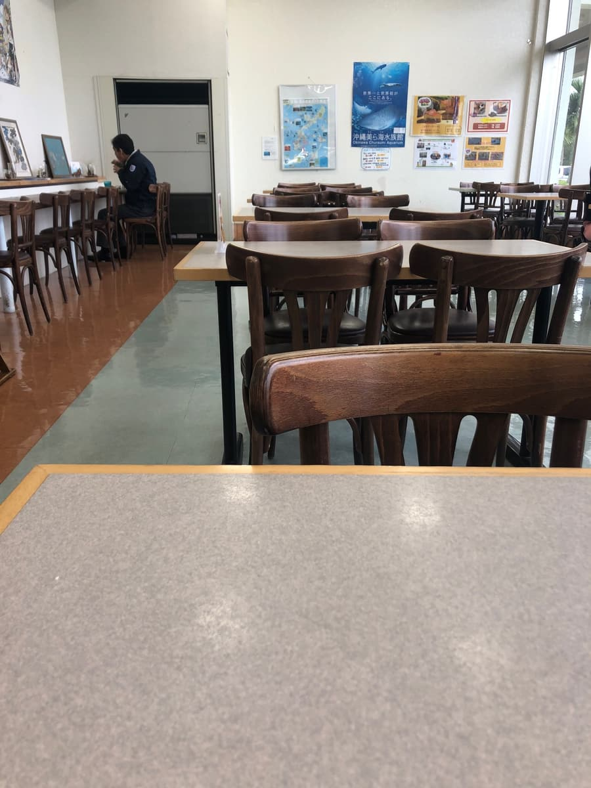
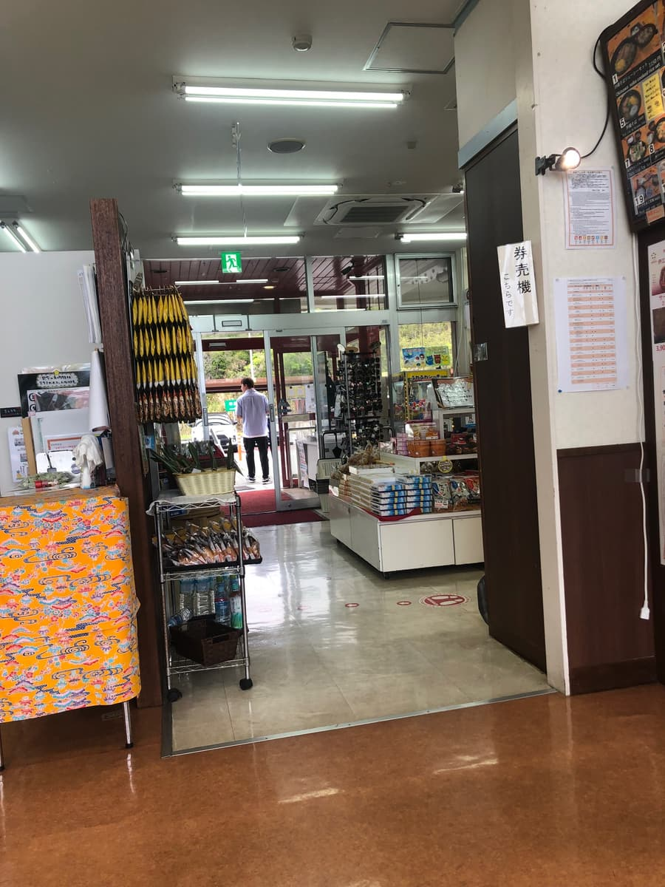
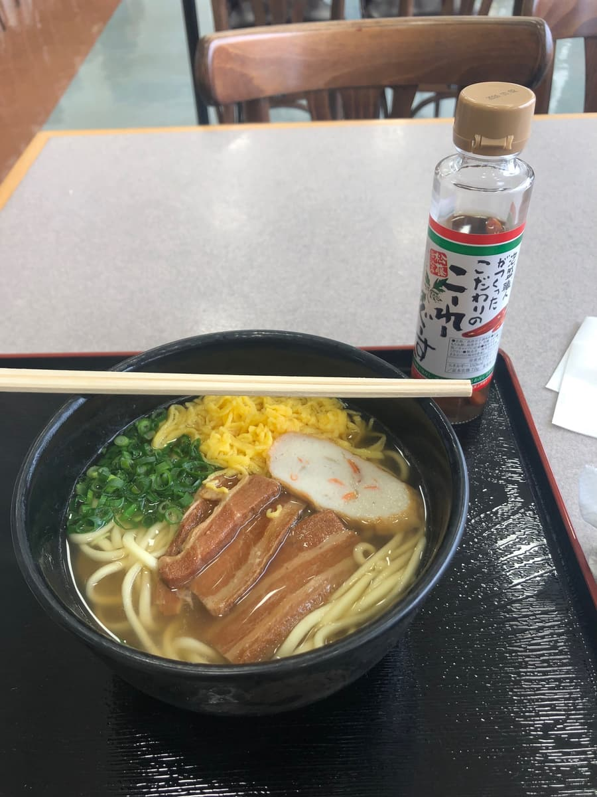
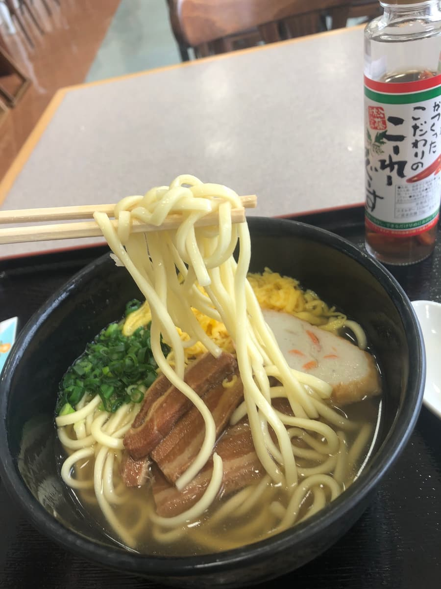

2025년 3월에 먹었습니다😊
이번에는 오키나와 자동차도를 달리던 중에 이게 서비스 에어리어(하행)에 들러서 「오키나와 소바」를 먹고 왔어요🍜

오키나와 소바 순례를 하다 보면 관광객용 유명 가게나 옛날식 지역 식당에 눈이 가기 쉬운데, 이런 서비스 에어리어의 오키나와 소바도 오키나와의 “일상의 한 그릇”이 보이는 느낌이라 꽤 궁금하거든요. 외관은 붉은 기와가 눈길을 끌고, 얼핏 보기만 해도 「아, 오키나와 같네」 하고 생각하게 하는 분위기네요😆 지붕 위의 시사도 좋은 맛을 내고 있어서, 여행 중에 잠깐 쉬어 가기에 딱 좋은 분위기였어요.

안으로 들어가니 서비스 에어리어답게 넓은 공간에 식당다운 소박함이 있고, 괜히 격식 차리지 않은 점이 오히려 마음이 편했어요. 식권 발매기 앞에서 뭘 먹을까 조금 고민하다가, 이번에는 역시 기본인 「오키나와 소바」를 골랐어요.



실제로 나온 한 그릇을 본 순간 든 생각은, 그야말로 옛날식 정석 스타일이라는 것이었어요. 검은 그릇에 파, 계란 지단, 어묵(가마보코), 삼겹살 조림(산마이니쿠)이 올라가 있어서 겉모습부터 튀지 않는 정통 계열. 이런 한 그릇은 먹기 전부터 맛의 방향성이 어렴풋이 상상되는데, 그 “상상대로 있어 주는 안심감”이야말로 오키나와 소바의 장점이기도 하죠😊 먼저 국물을 한 모금 마셔 보니 돼지뼈 베이스의 깊은 맛이 느껴지는 타입이었어요. 다만 너무 진하다거나 펀치가 강하다기보다는, 서비스 에어리어에서 먹는 한 그릇으로서 알기 쉽게 정리된 인상이었어요. 나쁘지는 않지만 「오, 이거 맛있다!」 하고 텐션이 오르는 느낌은 아니고, 꽤 평범한 국물이었어요.

면은 중간 굵기에 느슨한 스트레이트 면으로, 오키나와 소바다운 분위기는 확실히 있었어요. 들어 올린 모습도 영락없이 식당의 오키나와 소바다운 모양이었어요. 다만 먹어 보니 다소 부드러운 편이었어요. 개인적으로는 조금만 더 탄력이나 씹는 맛이 있는 쪽이 취향이었어요.
고명 중에서 가장 인상에 남은 건 역시 삼겹살 조림(산마이니쿠)이었어요. 겉보기부터 간이 제대로 배어 있었고요. 다만 한편으로는 힘줄 같은 질긴 식감도 조금 있어서, 입안에서 호로록 풀어지는 부드러움을 기대하면 그 부분은 조금 다르다는 느낌이었어요. 푹 삶아져 있기는 하지만 녹아내리는 계열은 아니에요. 그래서 삼겹살 조림에서 강한 만족감을 원하는 사람에게는 한 걸음 더 아쉬울지도 모르겠어요. 어묵(가마보코)이나 파, 계란 지단은 안정적인 조연이라는 느낌으로, 전체 모양새를 정돈하면서 옛날식 오키나와 소바 느낌을 제대로 받쳐 주고 있었어요.
이번에 먹으면서 든 생각은, 이 한 그릇은 “여행 중에 먹는 안심되는 오키나와 소바”로서는 성립하지만, 일부러 이걸 목적으로 들르느냐고 하면 거기까지는 아니라는 것이었어요. 오키나와 자동차도 안에서 비교하면, 전에 나카구스쿠 서비스 에어리어 안의 「아지센 라멘」에서 먹은 오키나와 소바 쪽이 더 맛있다고 생각했어요. 이번 이게 서비스 에어리어(하행)의 오키나와 소바는 좋은 의미로도 나쁜 의미로도 “보통”이었어요. 아무래도 어딘가에 가게마다의 개성이나 기억에 남는 포인트를 바라게 되기 때문에, 그런 의미에서는 조금 아쉬움도 느꼈어요.
그렇다고는 해도, 서비스 에어리어 식당에서 이런 정통 스타일의 오키나와 소바를 가볍게 먹을 수 있다는 건 역시 오키나와답고 좋죠. 관광 도중, 이동 중간에 조금 출출할 때 괜히 모험하지 않고 오키나와 소바를 먹고 싶은 사람에게는 충분히 괜찮다고 생각해요. 화려함은 없지만, 옛날식 정석의 오키나와 소바를 그대로 내어 주는 느낌은 있었어요.
평가(9점/15점): 본심으로는 「기대를 뛰어넘는 느낌은 아닌 평범한 느낌. 적극적으로 다시 먹고 싶을 정도는 아니다」라는 정도예요🙂 하지만 북부 관광을 하실 때 한번 들러 보시는 건 어떨까요?😆
면: ★★★☆☆（3）
수프: ★★★☆☆（3）
토핑: ★★★☆☆（3）